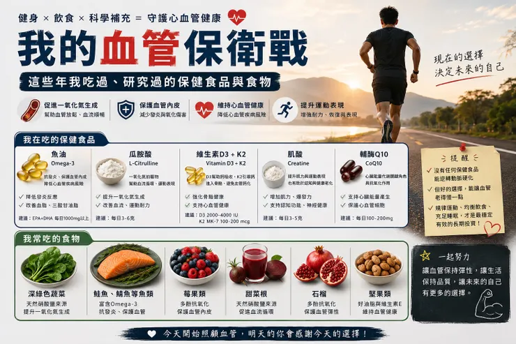

我以前從不相信健康食品，認為天然的東西肯定比人工合成的東西好。為什麼現在我開始嘗試健康食品？是因為曾和家人一起走了一段辛苦的復健之路，發現如果過去幾十年我們沒有好好注意自己的身體，單靠食物挽回真的來不及。家族遺傳的心臟病以及心血管疾病史，其實也悄悄的找上自己，也是因為這樣，和家人一起試著補充左旋精胺酸（L-Arginine）這個一氧化氮的前導物，來幫助血管擴張、改善心臟和動脈的健康。
諾貝爾醫學獎推薦的產品
1998年諾貝爾醫學獎得主Dr. Louis Ignarro發現一氧化氮能有效擴張血管，維護心臟和冠狀動脈的健康、預防過多的血凝塊阻塞血管，減少心臟病和中風發生率、放鬆動脈，有助維持正常血壓，並且有效促進大腦血液循環，增進長期記憶力。那時候他也共同參與研發了一種補充左旋精胺酸的產品，雖然當時我對於心血管的運作和知識沒有什麼概念，但為了家人的健康先嘗試看看，的確是有那麼一點點的效果，但卻也所費不貲。
後來隨著自己慢慢查資料發現，左旋精胺酸確實是一氧化氮的重要原料，科學上也證實它能增加體內一氧化氮生成。但另一個現實是：目前並沒有足夠證據證明補充精胺酸，或任何單一保健食品，能夠逆轉已經形成的動脈硬化。
看到這裡或許有點失望。因為我們總希望有一種神奇產品，可以把塞住的血管洗乾淨，把硬掉的血管變回年輕時的樣子。可惜現實世界沒有這麼簡單。後來我開始把焦點放在另一件事：既然無法期待一種保健食品逆轉動脈硬化，那我能不能讓血管不要繼續惡化？
於是我先處理膽固醇和內脂，開始重訓、控制飲食，也重新檢視自己吃進去的東西。
１.抗發炎與血栓的冠軍－魚油
說到不要讓血管硬化的第一名，大家肯定是推薦魚油。但雖然魚油對血管硬化有一定幫助，但並不是直接把已經硬化的血管『清乾淨』或『逆轉』。
魚油中Omega-3 脂肪酸（EPA、DHA）主要作用包括：✅ 降低三酸甘油脂✅ 抗發炎作用 ✅ 改善血管內皮功能 ✅ 降低血液黏稠度，減少血栓風險 ✅ 輕微降低血壓。
這些效果有助於減緩動脈硬化的進展，但對已形成的動脈粥樣硬化斑塊，效果有限。
２.轉換成精胺酸的－瓜胺酸（L-Citrulline）
魚油之外，我後來也稍微研究了一下瓜胺酸（L-Citrulline）。因為之前提到Dr. Louis Ignarro的產品哩，除了左旋精胺酸外，還有另外一個成分很感興趣，就是左旋瓜胺酸。
後來在許多研究中也發現，瓜胺酸進入人體後會轉換成精胺酸，而且提升血中精胺酸濃度的效果甚至比直接補充精胺酸更穩定，因為吃進去的精胺酸有很大一部分會在腸道和肝臟先被代謝掉，但瓜胺酸可以先通過這些關卡，再由腎臟慢慢轉換成精胺酸，也因此許多運動員和健身族會把它當成促進血流和一氧化氮生成的重要補充品。
3.血鈣的交通指揮官－K2
另一個我開始注意的是維生素K2。鈣片是很多人日常的補充品，但我真正擔心的不是缺鈣，而是鈣跑錯地方。如果鈣沉積在血管壁，就可能形成血管鈣化。K2的角色，就是幫助鈣質往骨頭走，而不是往血管跑。
４.製造能量的重要物質－CoQ10
也有研究顯示，CoQ10 可能有以下效果：
- 改善血管內皮功能血管內皮是血管最內層，功能好壞會影響血管彈性與硬化速度。
- 降低氧化壓力與發炎動脈硬化形成與慢性發炎、氧化傷害有關，CoQ10 可提供保護。
- 對血壓有輕度幫助長期補充 CoQ10 收縮壓與舒張壓可下降幾 mmHg，但效果不大。
- 改善心臟能量代謝對有心衰竭、心臟功能較差的人，CoQ10 的研究證據相對較多。
當然，保健食品只是輔助。
最重要的還是 日常生活作息的小事
那些最無聊、卻最有效的事情。
規律運動、控制體重、少吃精製糖、多吃深綠色蔬菜、保持睡眠。這些事情聽起來沒有任何吸引力，也沒有人會拍影片告訴你三天見效。但目前所有關於心血管疾病的研究，最後都指向同一個答案：沒有任何保健食品，比生活習慣更能決定血管的未來。
和家人一起走過住院的日子後，我花了很多時間研究怎麼救血管。最後發現，我真正需要改變的，其實是自己的生活。
為自己也為家人 更留意健康
隨著對心血管的認識更深，就知道不只是血鈣、血脂，甚至是睡眠、熬夜、飲食，各種的因素都是環環相扣。就像現代人常缺少維生素D，也會導致高血壓、動脈硬化，以及容易有較高的發炎指標。所以如果太陽曬太少、疲勞、免疫力不好、肌肉無力、血壓高，也應該適時補充D3，雖不是直接作用在血脂或抗氧化上，但也跟「血管健康」有間接關聯。

就像吃肌酸不只為健身做補劑。隨著年齡增長，自己的認知能力、肌力、疲勞恢復，到神經保護，都要好好地維持住現在的狀態。
雖沒有辦法讓自己的心臟、血管回到20歲。但希望如果能健康走到60歲的我，感謝現在願意開始行動的自己。也感謝現在的我，讓鼠姊姊和龍弟弟有個陪他運動的老爸。
